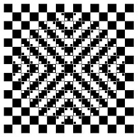

|
Your third IT startup having failed in a row, you have no other choice but to
seek a job at Mandatory Suit Corp. On your first workday, your task is to optimize
the output of some cryptic, unlabelled sales diagrams.
As it happens, you must use the in-house Mandatory Suit Graphics Library. This library lacks any sort of documentation, but you're a resourceful person, and reverse-engineered the usable API. This wasn't very difficult, though - apparently there is only one call, and that draws 1px thick, axis-aligned black unfilled rectangles. Your task is to analyze the input images, and output a list of calls that draw the same image, using the least possible amount of drawing operations. |

source: http://www.optical-illusionist.com/illusions/bulging-squares |
Each input is an arbitrarily sized png image that contains black (RGB 0,0,0) and white (255,255,255) pixels.
The output is a text file that contains:
Beginning with a white image, each output line draws a black unfilled rectangle between the specified pixels. After drawing all rectangles, the image must be identical to the original input.
We will not accept outputs that contain more lines than the number of pixels in the source image or more bytes than 10000000.
This task uses scaled scoring. For each input, the team with the shortest correct solution gets 100 points (as well as all other teams with solutions that are the same length). Longer solutions get progressively less points.